|
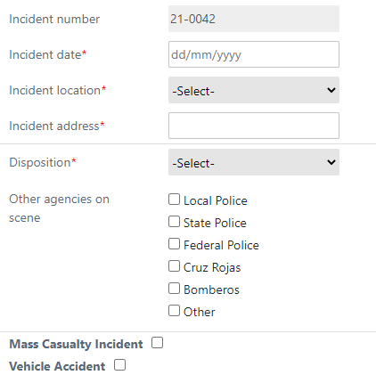
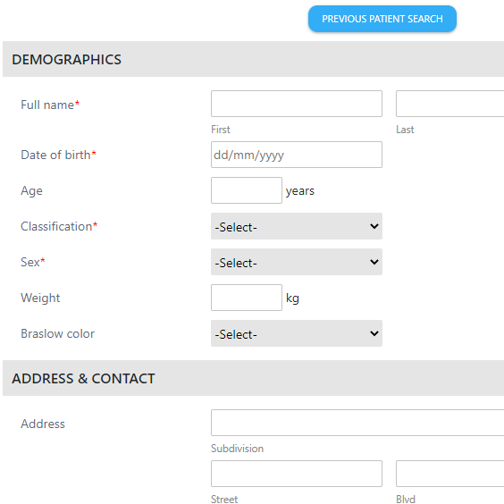
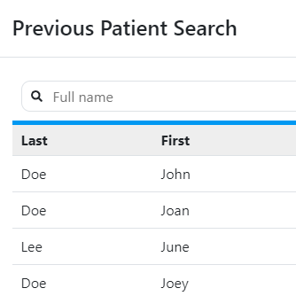
 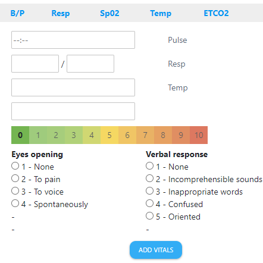
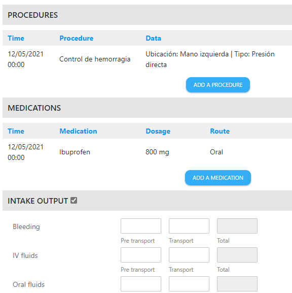
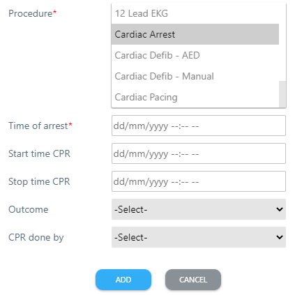
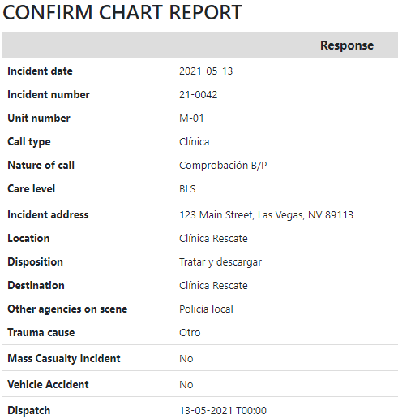
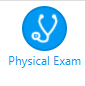
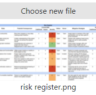
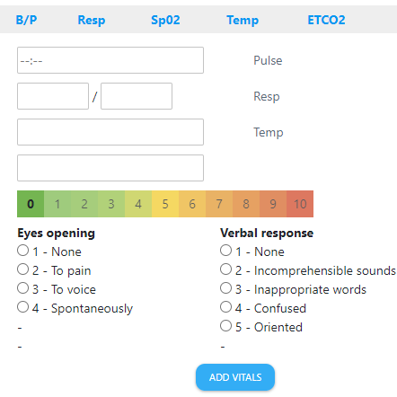
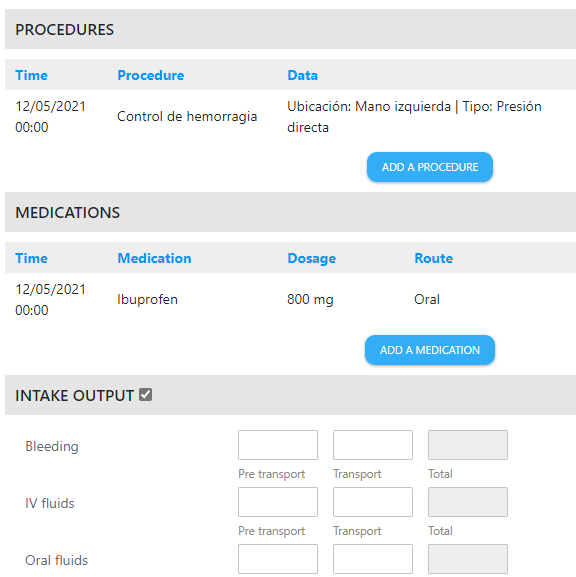
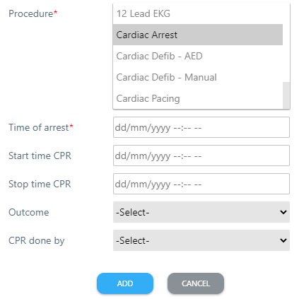
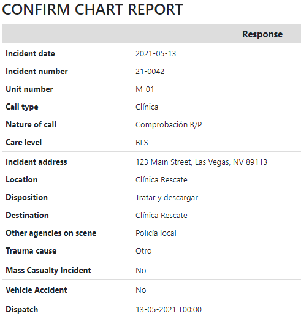
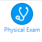
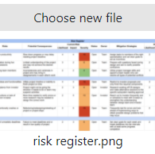
|
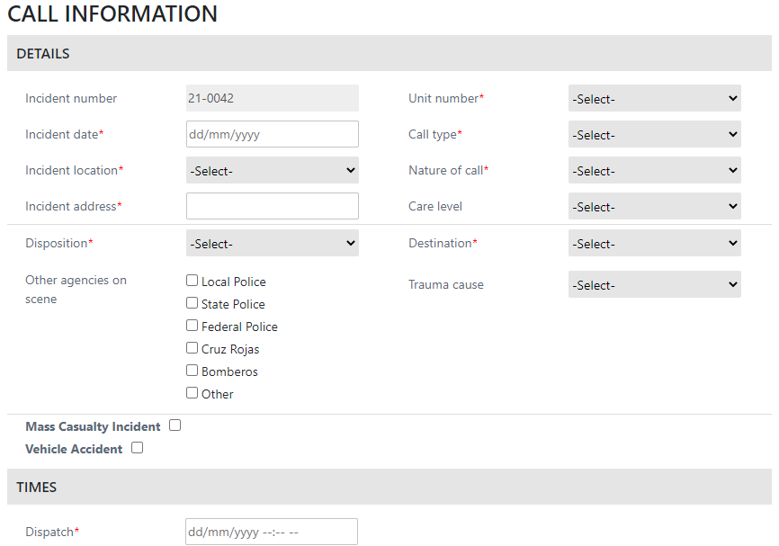
Create chart: top half of first page (call information)
Section headings have a background to help separate out the information associated with it. Each input field label is placed at the left of the inputs. Dropdowns are used for one selections while checkboxes are used for multiple selections. Red asterisks are used to indicate required fields. 'Mass Casualty Incident' and 'Vechicle Accident' fields can be checked to trigger for more inputs related to it. |